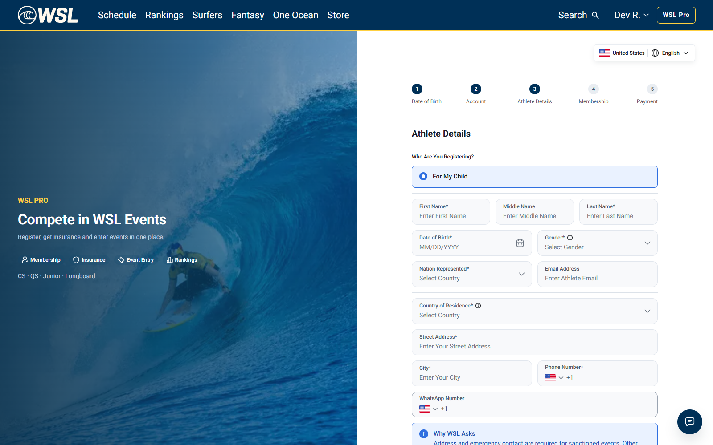
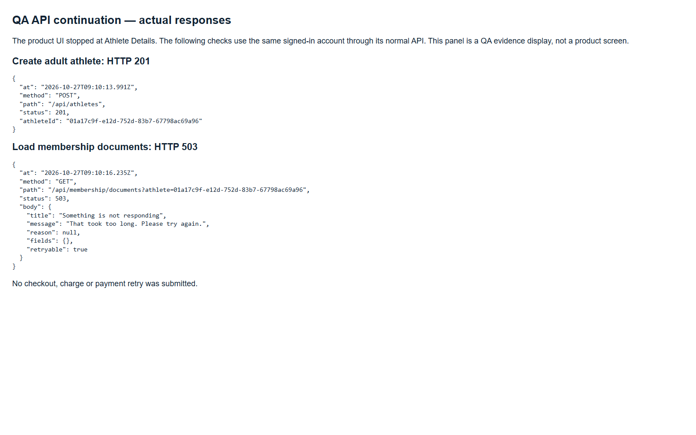

What happened on dev — complete issue recording
27 October 2026 · fresh run 2026-10-27T09:09:42.064Z to 2026-10-27T09:10:23.775Z · dev only.
Watch the full recording
Timestamps are approximate action markers. Download MP4 · Original WebM · Integrity check
The recorded flow
- Open dev registration and enter an adult date of birth. Age gate returns 200.
- Create a fresh account through the UI. Registration returns 201.
- Reach Athlete Details. The fresh account is offered only For My Child; Myself is absent. Stop the product UI before submitting a child form.
- Continue with explicitly labelled QA API checks using the same signed-in account. Creating the adult athlete returns 201.
- Request documents for that new athlete. It returns 503 — That took too long. Please try again. at 2026-10-27T09:10:16.235Z.
- Hold the actual request/response evidence on screen. Membership payment, event charge and retries are not reached.
Recording scope: the first part is the live product UI. The final screen is a clearly labelled QA panel displaying actual API results from the same run; it is not a product error page. This is an end-to-end record of the issue investigation, with an API-assisted continuation, not a completed browser-only registration/payment journey.
UI stopping point

Actual API continuation

Outcome and limitations
The documents blocker was reproduced on another fresh athlete: 01a17c9f-e12d-752d-83b7-67798ac69a96. This recording also observes the missing Myself option; its cause was not independently established. The earlier dev report contains the backend permission-refusal logs from the morning run. No new backend log capture is claimed for this recording.
Both original and MP4 videos decoded to EOF and retain the same 00:00:37.88 timeline, with no trimming, cropping or speed change. An earlier automation validation stop is excluded and documented in the integrity ledger.